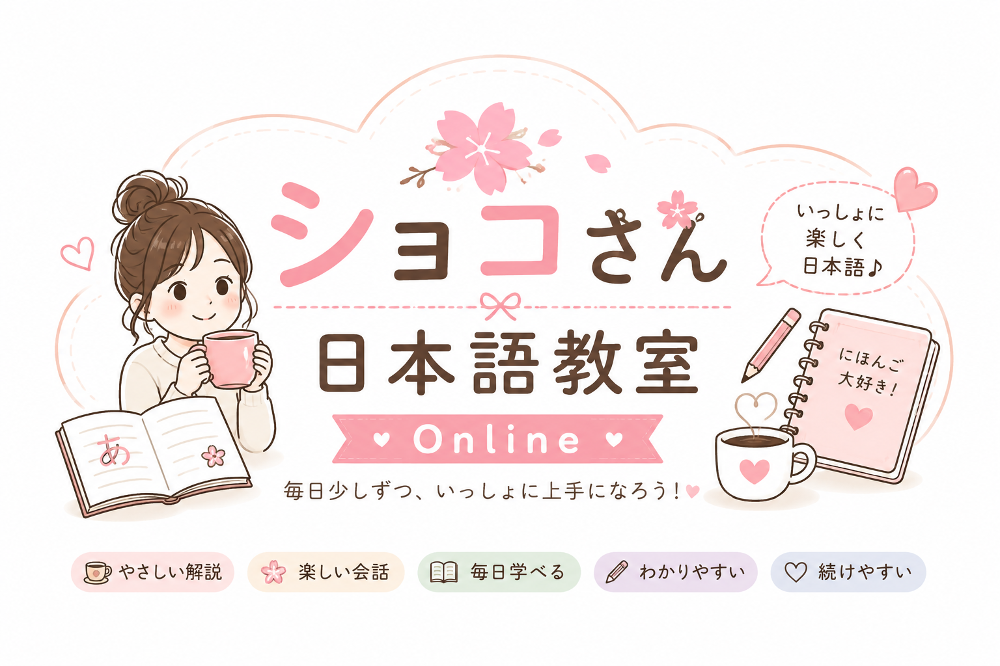

讓每一天的真實生活，成為最自然的日文教材。
跟著浩婷さん的心得，和ショコさん一起學會日本人真正會說的日文。
毎日少しずつ、いっしょに上手になろう。😊
每天 15 分鐘，陪你把日文變成生活。
選擇你今天想進入的學習方式。
從中文心得出發，延伸成日文 Blog、單字、句型、文法、文化與跟讀。
保存完整中文心得原文，搭配每日一張火柴人漫畫，方便朋友閱讀分享。
第一次學日文的人，可以從平假名、片假名、濁音與發音練習開始。
單字、句型、文法與文化會持續累積。重複出現時，回到第一次完整學習處複習。
跟著日文朗讀反覆練習，讓句子、語感與發音慢慢變成自己的。
認識浩婷さん與ショコさん，以及這個陪伴式日文學習網站的理念。